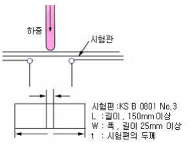
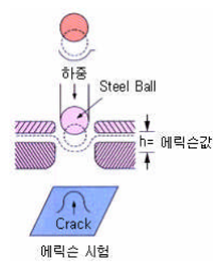

두께방향부분의 감소(축소율)는 r값에 반비례하고 폭방향부분의 감소는 r값에 비례하며, r값이 클수록 강판은 쉽게 균열되지 않으며 더욱 가공이 용이해진다.
4.DBTT Test 방법
- 시험 flow : 컵성형(Blanking, Punching) → 시험온도변화 → Drop weight test → 취성파괴여부관찰(천이온도는 취성파괴가 일어나지 않는 최저온도)
5.DBTT 평가 시험조건(컵성형후 No-trimming)
구분
세부항목
시험조건
구분
세부항목
시험조건
성형조건
Blank Dia(mm)
96
Drop Weight Test
Load(kgf)
4.44
Punch Dia(mm)
50
Drop Height(m)
0.9
Punch type
Flat Cup
Weight type
원통형
Drawing Ratio
1.92
시편거취방법
옆으로 눕힘
*Drawing Ratio 변화(1.7~2.16) : 85mm(1.7)~108mm(2.16))
6.굴곡시험
굴곡시험은 강판의 연성을 파단키 위하여 실시되며 통상 다음과 같이 실시된다. KS B 0801 No.3에 표기된 시편을 통상 냉연강판 굴곡성시험에 사용한다.
굴곡성 시험은 시편을 규정된 반경을 가진 축위의 규정된 각도로 굽히는 것이다. 그때 강판의 연성은 시편의 굽혀진 부위 외면에 균열이 생기는가 여부로 판정한다.
냉연강판에 있어서 시편은 통상 180로 굽힌다.
7.경도시험
강판의 경도는 다른 고유성질 즉 강도, 내구성, 가공성 등과 밀접한 관련이 있다. 따라서 경도시험은 상대적으로 쉽게 강판의 고유성질을 파악할 수 있기 때문에 기타 다른
성질을 파악키 위한 방법으로 종종 사용된다. 로크웰 경도시험은 통상 냉연강판의 경도 측정에 사용한다.

로크웰 경도시험
동 시험은 Steel Ball 을 사용하여 시편 표면에 최초 규정된 미세한 하중을 가한 후 서서히 정상적인 주하중 수준까지 부하를 준다.
주하중 부하 중지시 시편 표면에 발생되는 홈 깊이에 따라 경도치를 측정하게 되며, 이러한 작업을 2회 반복시 순수부하량 증가에 따라 표면에 발생되는
홈 깊이 값을 로크웰경도 B-Scale 및 F-Scale 이라 한다. B-Scale은 구경 1/16인치(1.588mm)의 Steel Ball을 사용하여 100kg의 시험하중 부여시 얻어진다.
F-Scale은 60kg의 시험하중 부여시 얻어지며 사용 Steel Ball은 B-Scale 측정시 사용한 것과 동일한 크기의 것을 사용한다.
B-Scale은 측정시 사용한 것과 동일한 크기의 것을 사용한다. B-Scale은 시편두께가 0.762mm(0.030in) 또는 그 이상일 때 정확한 값을 얻을 수 있으며,
0.762mm 이하 시편에는 F-Scale을 사용하는 것이 바람직하다.
8.가공도시험
냉연강판의 가공성은 다양한 방법으로 측정될 수 있다.
가공성은 복잡한 제조공정을 통해서 얻어지기 때문에 실제로 단순한 한가지 시험방법으로 측정하기 어렵다. 따라서 통상 널리 사용되는 두가지 시험방법을 설명하면 다음과 같다.
에릭슨 시험
에릭슨 시험방법은 강판의 인발성을 시험하기 위해서 사용되고있다. 우측도표에서 보는바와 같이 시편을 유연한 구면체의 삽입물로 펀치하게 된다.
삽입물은 시편에 균열이 발생되는 점선으로 표시된 원까지 하향시킨다. 시편이 파쇄될때 측정된 h값이 에릭슨 측정치이다.

커니컬 컵 시험
이 시험방법은 최근에 강판의 가공성을 시험하기 위하여 널리 사용되고 있다. 커니컬 컵 시험은 우측도표에서 보는바와 같이 시편을 평평하게 혹은
둥글게 펀치하여 압력을 가하게 된다. 시험치는 시편이 빨려 들어간 컵직경 측정치로 얻어진다. 이 시험값은 강판 실가공작업과 거의 유사하므로
현재 자동차 제조업체에서 널리 사용하고 있다.